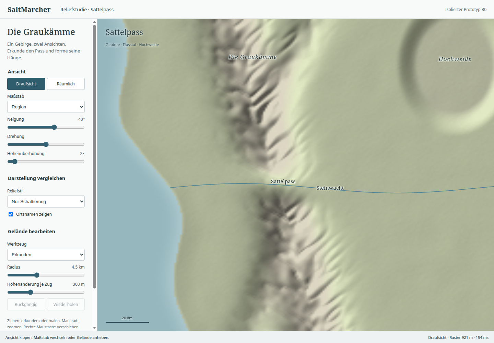
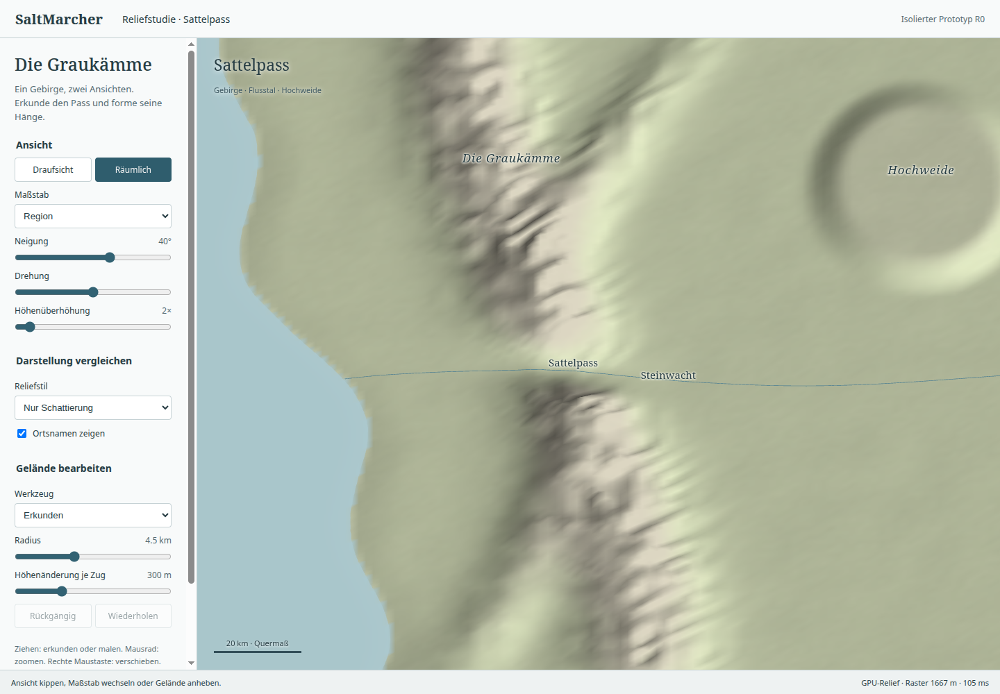
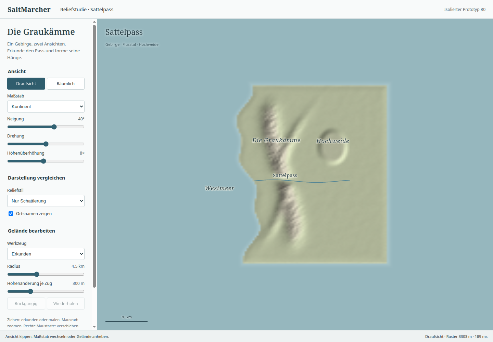
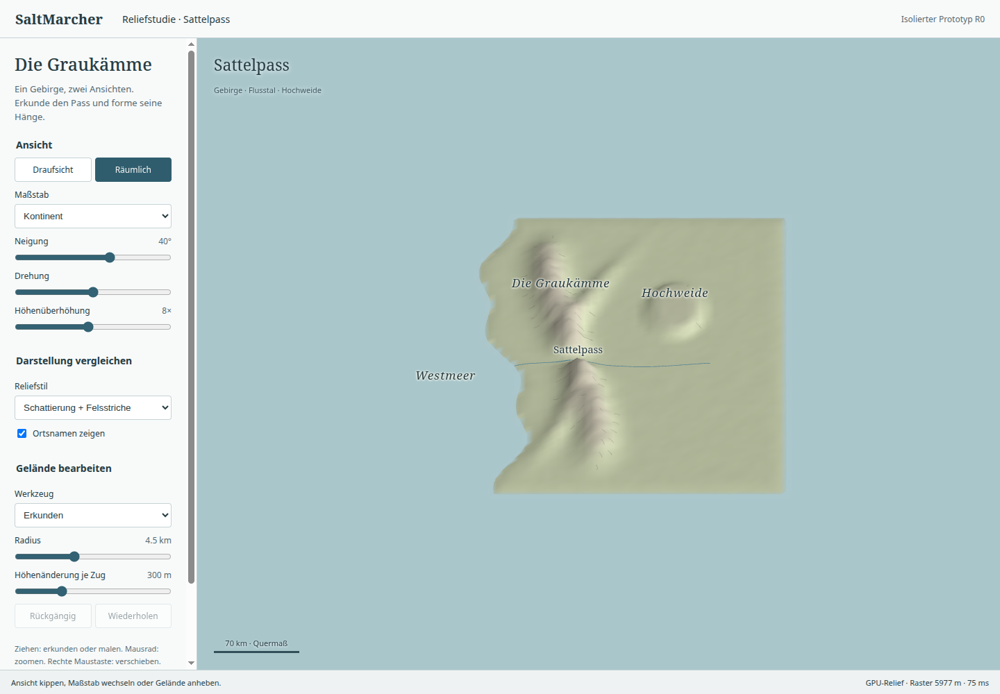
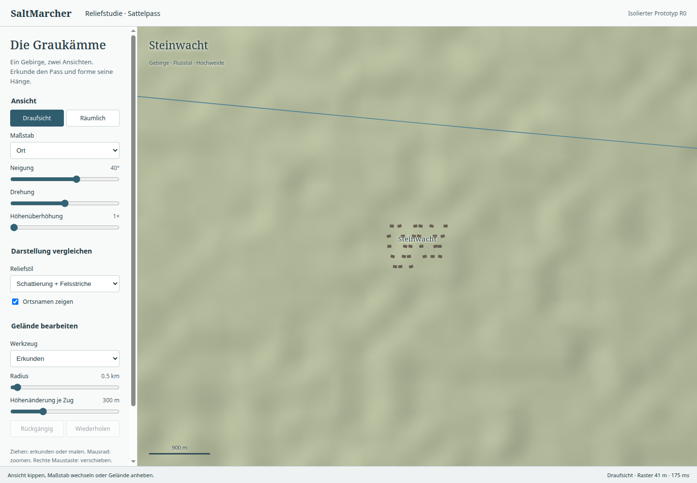
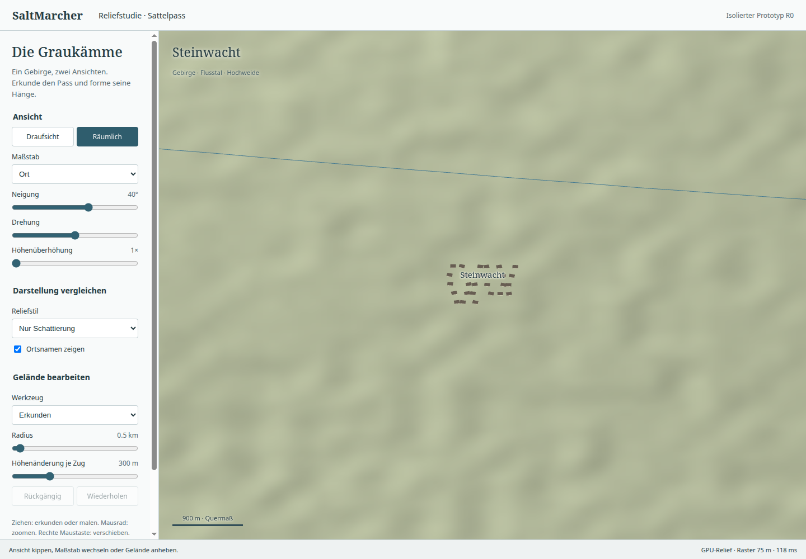
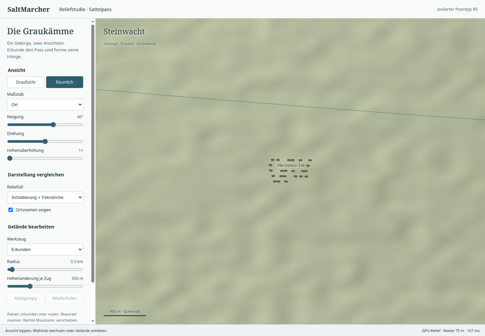
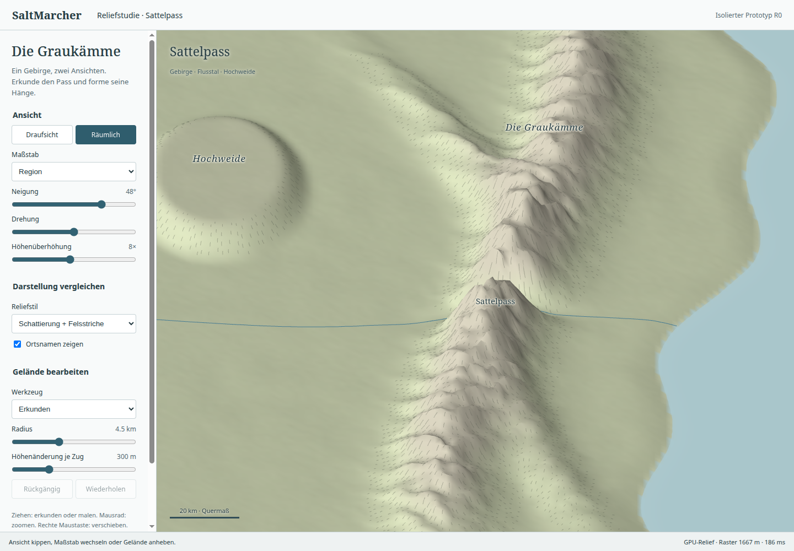
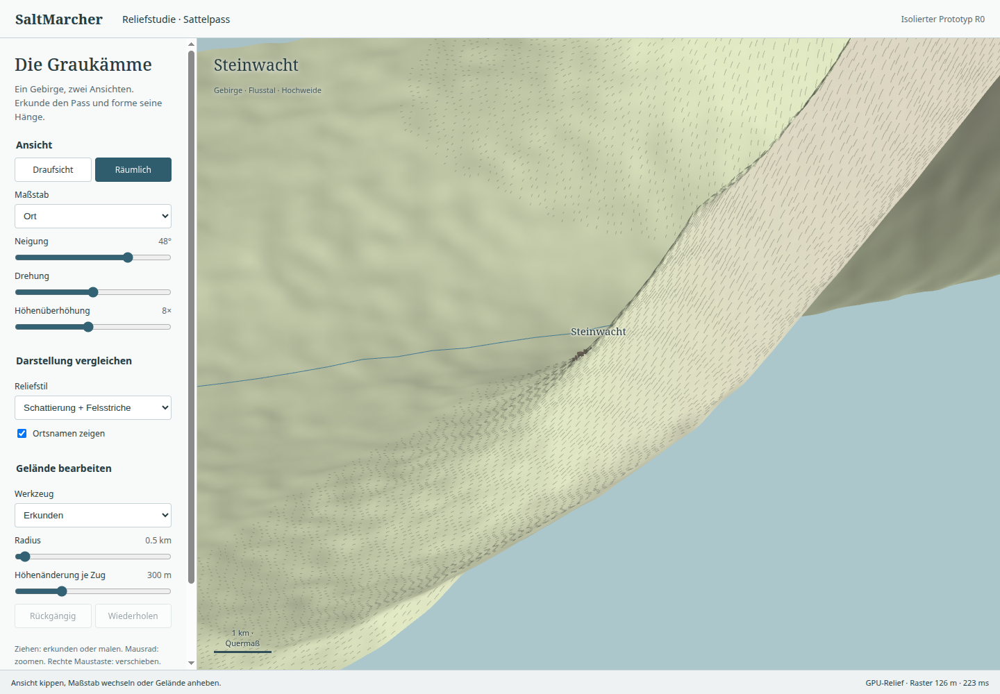

Native Electron-Aufnahmen desselben Höhenmodells. Links nur Schattierung, rechts zusätzlich Felsstriche. Technische Bedienprobe bestanden; visuelle Nutzerabnahme offen. Das ist ein isolierter Prototyp, keine integrierte Atlasfunktion.







Der erste Versuch war räumlich gespiegelt, im Ortsmaßstab zu stark überhöht und zu regelmäßig schraffiert. Diese Fassungen wurden verworfen.


Messungen und Quellenbindung · Vollständigkeitsprüfung gegen R0